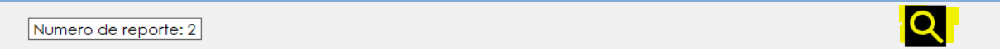
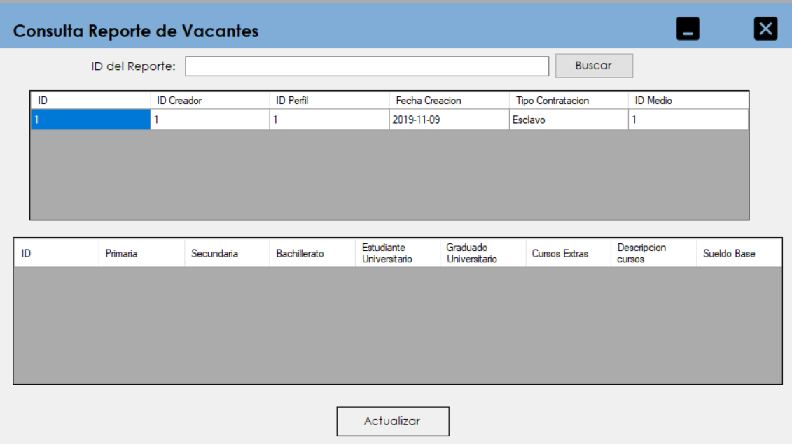
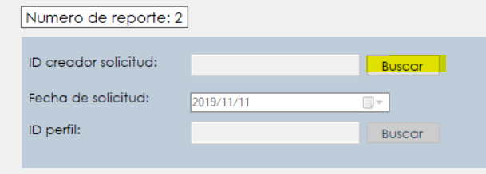
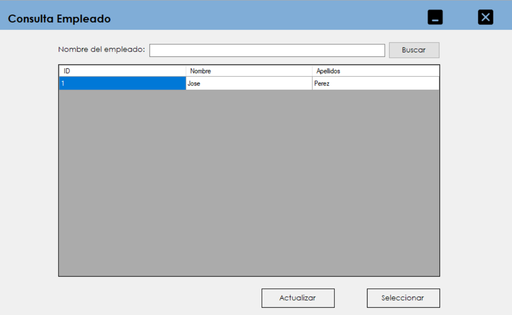
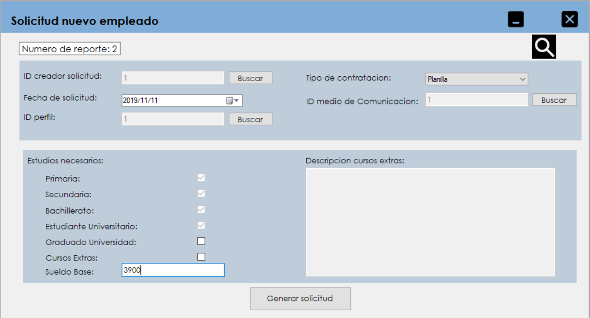

En este boton podremos consultar las solicitudes de empleados ya creadas para evitar crear datos duplicados.
Luego de presionar ese botón emergera un formulario para verificar las solicitudes ya creadas.
Antes de crear una solicitud debemos de buscar el empleado que la esta realizando pulsando sobre el boton de buscar.
Luego de presionar ese botón emergera un formulario para seleccionar uno de los empleados existentes.
Luego de escoger un empleado se debe dar click sobre el boton de "Seleccionar".
Este mismo procedimiento se debe seguir para el perfil y el medio de comunicacion deseado.
Despues de ingresados todos los datos nos quedara la solicitud de una forma similar a esta:
Luego debemos presionar el boton de "Generar Solicitud" y quedara guardada para posteriormente ser utilizada.